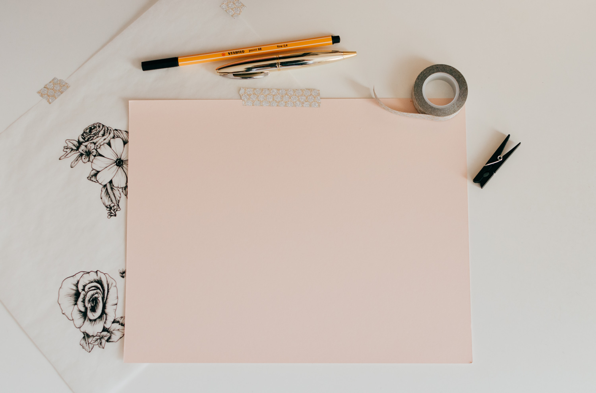

Common phrases used when getting into bullet journaling:
- Tasks: things you need to do or have already done
- Events: things that are going to happen, and things that already have
- Notes: thoughts, observations, and anything that isn't a task or event
- Dot: the main symbol you will use when writing things down. A dot signifies a task that needs to be completed
- Spread: the way information is organized on a page
- Monthlies: A monthly calendar or a way to organize a month's tasks and events
- Weeklies: A weekly calendar or a way to organize a week's tasks and events
- Dailies: A spread dedicated to one day's tasks and events
- Habit trackers: spreads where you track activities you do regularly

You have to start somehwere!